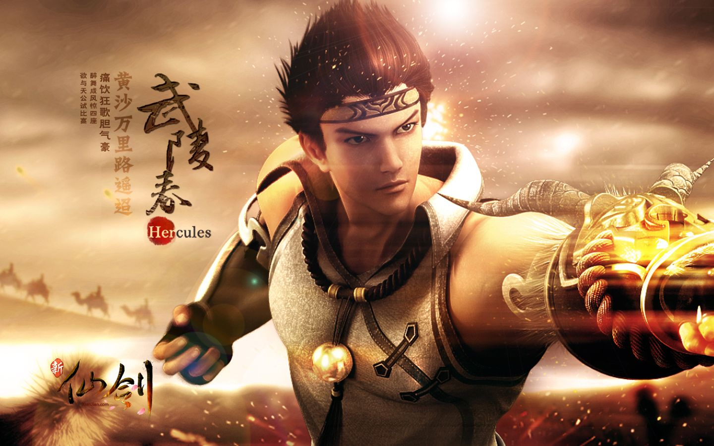

|
|
|
新仙剑奇侠传Online，是运用Unity3D引擎开发的中国风MMORPG，由台湾大宇正版授权，仙剑之父姚壮宪监制，骏梦游戏正在研发中，历时3年，融合仙剑奇侠传1到5单机版中所有经典角色、场景、剧情、道具等，再现经典。
《新仙剑奇侠传online》（简称：新仙剑）是由台湾大宇正版授权，“仙剑之父”姚壮宪监制，骏梦游戏倾情研发运营，360游戏中心独家联运的一款航母级双端（网页和客户端）RPG网络游戏巨作。
游戏继承了中国传统仙剑文化世界观，力图还原给玩家一个原汁原味的仙剑世界，再现《仙剑奇侠传》系列一到五单机版中的经典角色、场景、剧情、道具等元素。
在游戏世界中，玩家将扮演仙侠角色，跟随仙剑历代经典角色开启冒险之旅；通过丰富多彩的剧情关卡，一路斩妖除魔，体验战斗的爽快感和动画所带来的视听盛宴；加入到各大门派的恩怨情仇，感受游戏社交互动乐趣；畅游在如梦如幻，有血有肉的仙侠世界同时，享受游戏所带来的愉悦、感动、升华。
《新仙剑》将传承历代仙剑精神，不仅延续一代经典，也为所有仙剑玩家打造更加精品的仙侠游戏，构建属于玩家自己的仙侠故事——展现游戏人生，人生百态、生离死别、轮回辗转。让玩家能在那些经典的游戏角色中，找到一个属于自己的影子，而这个影子，则是感动一生的源泉。
http://www.xianjian.com/